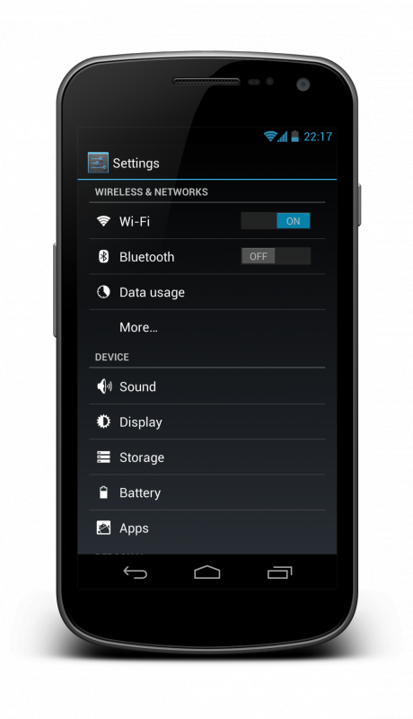
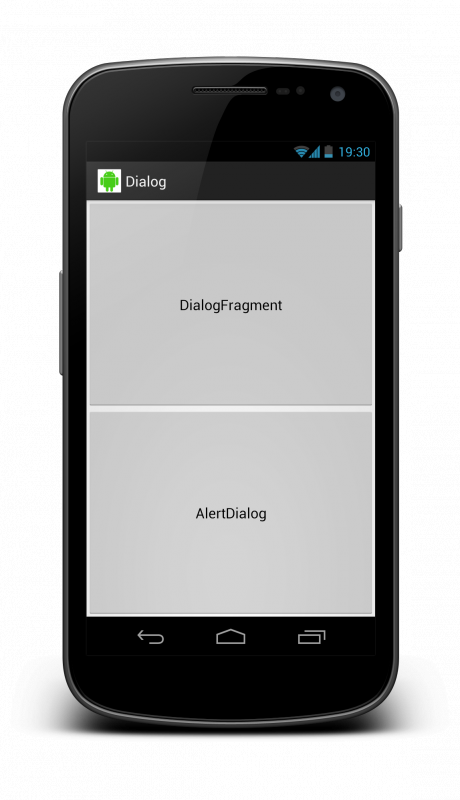
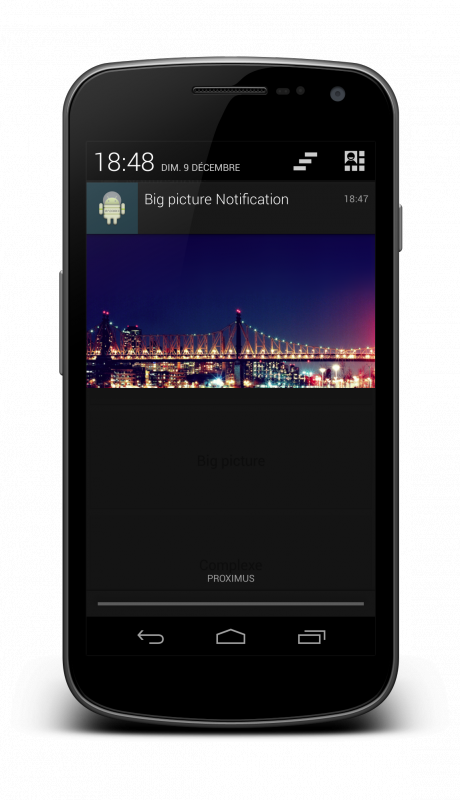

Si créer des applications Android est devenue une passion pour vous grâce à l'excellent tutoriel de Apollidore qui aborde les bases du développement Android, vous êtes au bon endroit. La valeur ajoutée de ce tutoriel est de vous permettre d'apprendre des notions sont parfois difficiles à acquérir tant les ouvrages sont peu nombreux sur les nouvelles technologies intégrées au système.
L'objectif de ce tutoriel est d'aborder des notions avancées sur le développement Android en restant accessible pour les débutants. Tout ce qui figurera sera consciencieusement expliqué afin de vous permettre d'en comprendre les concepts et de pouvoir les mettre en pratique directement, à travers des travaux pratiques sérieux.
Pour parvenir à atteindre cet objectif, nous aborderons :
L'utilisation de fragments pour confectionner des interfaces souples et avancées.
Les derniers composants ajoutées dans les dernières versions d'Android.
La mise en place d'un serveur pour nous permettre d'alimenter nos applications par après.
La gestion de données partagées avec, entre autre, la récupération des données sur une base de données distantes.
L'intégration d'une Google Map de la génération de la clé API aux marqueurs à placer sur la map.
L'utilisation de librairies communautaires pour vous aider dans le développement Android.
Si ce menu vous parait intéressant à suivre, attendez de lire le tutoriel et d'en apprendre plus.
La notion de fragment est souvent confuse pour les débutants et pas toujours bien comprise par ceux qui commencent à programmer assez régulièrement sur la plateforme Android. Les fragments sont à mi-chemin entre l'activité et la vue ; c'est-à-dire qu'il ne s'agit ni de l'un, ni de l'autre mais qu'ils sont étroitement liés. Votre fragment consiste à définir un morceau d'interface que vous pourrez attacher à plusieurs endroits, sur des activités.
Par exemple, dans le cas où vous désirez rendre compatible votre application sur smartphone et sur tablette, vous n'aurez pas spécialement envie avoir la même interface. La taille d'écran des tablettes étant largement plus grande que celles des smartphones, il serait dommage de ne pas en profiter. L'idée consiste de définir des fragments que vous afficherez un à un sur un smartphone et à plusieurs sur tablette.
Si vous avez une liste de news (par hasard ? :-° ). Sur votre smartphone, vous afficherez cette liste et une fois que l'utilisateur aura effectué une pression sur l'un des items de la liste, vous lancerez un autre écran avec les détails de la news sélectionnée. Quant à la version tablette, vous afficherez la liste des news à gauche et directement à droite les détails de la news sélectionnée, sans changer d'écran.
Ce genre de chose est possible grâce aux fragments !
Le cycle de vie des fragments
Vous connaissez certainement les activités (j'espère en tout cas sinon il y a du souci à se faire ^^ ) et leurs cycles de vie. Celui des fragments est très similaire et en même temps étroitement lié avec l'activité à laquelle est attaché. Vous retrouvez toutes les méthodes callback d'une activité, à savoir onCreate, onStart, onResume, onPause, onStop et onDestroy. Ces méthodes ont exactement le même but dans les fragments que dans les activités.
Cependant, il en rajoute quand même qui sont appelés par l'activité hôte du fragment. Nous verrons l'utilité de ces nouvelles méthodes dans la suite de ce chapitre. Vous pouvez voir l'ensemble des méthodes via le schéma ci-dessous disponible sur le portail des développeurs Android.
Cycle de vie des fragments disponible à partir du site des développeurs Android
La bibliothèque de compatibilité
C'est bien beau n'est-ce pas ? Un monde où vous pouvez librement placer des fragments aux endroits que vous désirez pour optimiser vos applications sur le plus d'appareil possible. Malheureusement, ce n'est pas si simple. Au début, Android était dédié uniquement aux smartphones ; c'est-à-dire à des écrans de moins de 4 pouces (les smartphones de plus de 4 pouces ne sont arrivés que très récemment à l'heure où j'écris ces lignes). Par après, Google a étendu son système aux tablettes avec la version 3 (les versions 2 et moins étaient donc destinés aux smartphones) et la version 4 qui unifie les 2 types.
C'est avec cette version 3, HoneyComb, qu'est apparu les fragments. Techniquement, ce composant (et les autres que nous verrons dans la suite de cette première partie) n'est pas disponible en dessous de cette version. Comment pouvons-nous donc développer notre application sans devoir créer deux projets (un pour les versions 2 et antérieur et un autre pour la version 3 et supérieur) ?
Je vous ai déjà dit que Google était une boite formidable ? Maintenant, je vous le dis. Google est une boite formidable ! Ils ont développé une librairie de compatibilité qui vous permettra d'utiliser une très grande partie des fonctionnalités disponibles à partir de la version 3 d'Android dès la version 2.1. Soit regrouper environ 95% du marché des appareils tournant avec Android. Nous apprendrons à l'utiliser et à aller plus loin grâce à un projet communautaire de compatibilité que nous verrons plus loin dans ce tutoriel.
Vous savez maintenant ce que sont des fragments. Vous n'avez peut-être pas saisi complètement son utilité mais vous comprendrez vite. Il existe deux manières d'intégrer des fragments dans une activité : de manière fixe en spécifiant vos fragments directement dans un fichier XML d'affichage ou dynamiquement avec l'aide d'outils mis à disposition aux développeurs par Android. Nous aborderons d'abord le plus simple, les fragments fixes, et dans la suite de ce chapitre, la manière dynamique.
Création d'un fragment
Avant de pouvoir utiliser des fragments, il va falloir savoir comment nous pouvons en créer. Pour ce faire, c'est très simple. Avec un peu de réflexion, vous pourriez parvenir à le faire vous même parce que c'est quasiment identique aux activités. Il vous suffit de définir une portion d'interface dans un fichier XML d'affichage et de l'attacher à un Fragment, à quelques différences près. A savoir que nous ne désérialisons pas notre fichier XML dans la méthode public void onCreate (Bundle savedInstanceState) mais à partir de la méthode public View onCreateView (LayoutInflater inflater, ViewGroup container, Bundle savedInstanceState) dont le premier paramètre vous permettra de le faire.
De plus, et chose importante, Eclipse vous proposera d'importer deux paquetages pour avoir accès à Fragment (android.app.Fragment et android.support.v4.app.Fragment). Quel est la différence entre ces 2 fragments ? Le premier redirige vers le Fragment de la version d'Android que vous avez délimité dans le manifest de votre projet ; c'est-à-dire que vous n'aurez pas accès à cet import si vous n'êtes pas à une version 3 et plus puisque Android 2 ne connait normalement pas les fragments. Le deuxième redirige vers le Fragment du projet de compatibilité Google (bibliothèque inclut automatiquement lors de la création d'un nouveau projet dans les récents ADT). Sauf si vous ne désirez pas rendre vos futurs programmes compatibles avec les anciens terminaux, nous utiliserons à chaque fois les imports de la bibliothèque de compatibilité.
Pour notre exemple, nous allons faire quelque chose de simple. Nous allons simplement placer un TextView au centre du fichier XML d'affichage que nous attacherons à un Fragment qui sera lui même attaché à une Activity. Nous allons nommer notre fichier XML d'affichage fragment_fixe et nous placerons dedans :
Nous désérialisons ce fichier XML d'affichage dans un fragment que nous nommerons FixeFragment :
package com.siteduzero.android.fragments.fixe;
import android.os.Bundle;
import android.support.v4.app.Fragment;
import android.view.LayoutInflater;
import android.view.View;
import android.view.ViewGroup;
import com.siteduzero.android.R;
public class FixeFragment extends Fragment {
@Override
public View onCreateView(LayoutInflater inflater, ViewGroup container,
Bundle savedInstanceState) {
return inflater.inflate(R.layout.fragment_fixe, container, false);
}
}
Vous pouvez vous rendre compte de la simplicité déconcertante de la création d'un fragment. Son utilisation est tout aussi simple lorsque vous l'attachez fixement à une activité. Dans chaque activité, nous allons créer un autre fichier XML d'affichage, que nous nommerons activity_fragment_fixe, et dans lequel nous allons déclarer un widget Fragment qui spécifie dans son attribut android:name notre FixeFragment.
Dans le code de l'activité, FixeActivity, il nous suffit simplement de désérialiser le fichier XML d'affichage que nous venons de créer pour attacher notre Fragment et d'étendre la classe FragmentActivity à la place de Activity pour notifier Android que nous utilisons des Fragment.
Qu'est ce que nous pouvons en dire ? Vous pouvez vous rendre compte que l'activité est vide, peu importe ce que vous placez dans un fragment. C'est l'une des forces de l'utilisation des fragments. Habituellement, les activités jouent le rôle des contrôleurs dans une architecture MVC (patron architectural sur lequel Android se base dans le développement d'application). Dans notre cas, les fragments joueront le rôle de contrôleurs pour les vues qu'ils instancient. Cela permet de maintenir plus aisément le code et de séparer les responsabilités entre différentes classes.
Résultat de l'exécution de l'activité FixeActivity
Réarranger les fragments en paysage
Cependant, ce n'est pas parce que nous définissons des diagrammes fixes que nous ne pouvons pas faire des choses intéressantes. C'est pourquoi je vais vous expliquer comment réarranger vos fragments lorsque vous basculez votre appareil en mode paysage. L'idée est la suivante. Nous voulons afficher FixeFragment lorsque nous sommes en mode portrait et deux fois l'un à côté de l'autre en mode paysage. Vous êtes censé avoir une petite idée de la marche à suivre si vous avez déjà développé sur Android ou si vous avez suivi le tutoriel officiel d'Android pour débutant du Site du Zéro. C'est pourquoi je vais vous laisser réfléchir sur le problème pour parvenir à ce résultat :
Résultat de l'exécution de l'activité FixeActivity en paysage
Correction
Vous avez réussi à trouver quelque chose ? Si vous êtes parvenu à un résultat similaire au mien, c'est déjà pas mal. Si vous avez la même solution que moi, c'est encore mieux. Pourquoi ? Simplement parce que la solution la plus simple pour parvenir à mon résultat est de créer un nouveau fichier XML d'affichage du même nom que celui de l'activité qui se trouve dans le dossier layout mais dans le layout-land et en définissant les deux Fragment dans ce fichier. Le système se rendra automatiquement dans ce dossier pour récupérer le bon fichier XML et tout sera fait automatiquement !
On va faire quelque chose d'encore plus intéressant. Habituellement, lorsque vous développez vos applications, vous définissez des écrans fixes. J'entends par là que rien ne change pendant son exécution. Cliquez sur un bouton ouvre une nouvelle activité qui affiche les widgets déclarés dans son fichier XML d'affichage. Il est bien possible de masquer des portions d'interface mais ce n'est jamais très performant (voire joli). Les fragments apportent une solution simple et performant pour modifier dynamiquement l'interface de nos écrans.
Gérer ses fragments
Android met à disposition des développeurs une interface indispensable pour gérer ses fragments dynamiquement, FragmentManager. Cette interface offre plusieurs services dont un qui nous intéresse tout particulièrement : gérer des transactions. Comment ça fonctionne ? Chaque opération sur les fragments doivent être regroupée dans une transaction accessible à partir du FragmentManager.
Utiliser ces services est très simple mais il ne faut pas oublier que nous utilisons la bibliothèque de compatibilité de Google. L'initialisation du manager est donc un peu différente. Vous aurez sans doute remarqué le mot clé "support" dans l'importation de la classe Fragment. Ce mot clé n'est pas un hasard et se retrouvera un peu partout dans l'utilisation des classes venant de la bibliothèque. Ainsi, pour initialiser, vous utiliserez non pas la méthode public FragmentManager getFragmentManager() mais la méthode public FragmentManager getSupportFragmentManager().
Le contrôleur des fragments
Vous vous souvenez ce que je vous ai dit au sous-chapitre précédent ? Les activités ne servent plus de contrôleurs des vues qu'elles contiennent. Cependant, elles deviennent contrôleurs des fragments qu'elles contiennent, encore plus lorsqu'elles doivent les gérer dynamiquement. C'est la responsabilité de l'activité de gérer l'affichage du fragment qu'on désire. Qu'allons-nous faire ? Nous allons créer deux fragments qui afficheront, pour les deux, un TextView et un Button. Cela nous permettra de switcher d'un fragment à l'autre en appuyant sur le bouton. Je pars du principe que la création d'un fragment est quelque chose d'acquis maintenant. Je vous laisse à votre bon soin de créer les fragments Dynamic1Fragment et Dynamic2Fragment.
Le réel changement sera dans notre activité, DynamicActivity. Première chose, son fichier XML d'affichage ne comportera aucun fragment mais un FrameLayout. Il servira de conteneur pour nos fragments. Vous comprendrez bien assez vite. Sachez simplement que vous devrez lui donner un identifiant afin de pouvoir remplacer son contenu par un autre.
Seconde chose, nous allons devoir structurer notre code. A partir de la méthode public void onCreate(Bundle savedInstanceState), nous appelerons deux méthodes : private void setupFragments() et private void showFragment(final Fragment fragment). La première méthode initialisera les différents fragments et ne sera appelé qu'à partir de la méthode onCreate. La seconde méthode se chargera d'afficher le fragment qu'on passe en paramètre à l'écran. Elle pourra être appelé à partir des boutons.
Initialisation des fragments
Si je vous demandais d'initialiser les fragments, je sais ce que vous feriez. Sans doute quelque chose qui ressemble à this.mDynamic1Fragment = new Dynamic1Fragment();. Vous n'avez pas tout à fait tord mais il ne faut jamais perdre à l'esprit que nous développons sur des appareils mobiles et il n'y a pas de petites économies. Si Android parvient à sauvegarder en cache nos fragments, cela serait bien de pouvoir les récupérer. Il existe deux manières d'y parvenir, par identifiant ou par tag. Comme nous avons des classes fragments, le plus simple est d'utiliser les tags. Il suffit de rajouter une constante publique dans nos fragments pour leur donné un nom unique.
Pour utiliser ces tags, nous récupérerons le FragmentManager pour appeler dessus la méthode public abstract Fragment findFragmentByTag (String tag). Avant d'initialiser nos fragments, nous essayerons de les récupérer par le biais de cette méthode afin d'économiser de la mémoire ! Voici à quoi ressemble notre méthode avec nos deux fragments :
private void setupFragments() {
final FragmentManager fm = getSupportFragmentManager();
this.mDynamic1Fragment = (Dynamic1Fragment) fm
.findFragmentByTag(Dynamic1Fragment.TAG);
if (this.mDynamic1Fragment == null) {
this.mDynamic1Fragment = new Dynamic1Fragment();
}
this.mDynamic2Fragment = (Dynamic2Fragment) fm
.findFragmentByTag(Dynamic2Fragment.TAG);
if (this.mDynamic2Fragment == null) {
this.mDynamic2Fragment = new Dynamic2Fragment();
}
}
Remplacer les fragments
La seconde méthode consistera simplement à afficher le fragment passé en paramètre sur l'écran en remplaçant le contenu du FrameLayout. Pour ce faire, nous avons besoin d'une transaction sur laquelle nous allons devoir appeler la méthode public abstract FragmentTransaction replace (int containerViewId, Fragment fragment). Son utilisation est simple, donner l'identifiant du layout conteneur et le fragment à remplacer. On implémentera la méthode de la manière suivante :
private void showFragment(final Fragment fragment) {
if (fragment == null)
return;
final FragmentManager fm = getSupportFragmentManager();
final FragmentTransaction ft = fm.beginTransaction();
// We can also animate the changing of fragment
ft.setCustomAnimations(android.R.anim.slide_in_left,
android.R.anim.slide_out_right);
ft.replace(R.id.frameLayoutListView, fragment);
ft.commit();
}
Résultat final
Mais attends une seconde. C'est bien beau tout ça mais je fais comment pour appeler la méthode private void showFragment(final Fragment fragment) lorsque je clique sur mes boutons ? Mes fragments ne connaissent pas forcément l'activité précise dans lequel il se trouve.
Vous n'avez pas tord mais Google a apporté une réponse à ce léger problème. L'un des attributs que vous pouvez donner à vos boutons est le suivant : android:onClick. La valeur que vous donnez à cet attribut vous oblige à implémenter une méthode du même nom dans l'activité dans laquelle il est désérialisé. Du coup, dans le fichier XML d'affichage de fragment 1 et 2, nous avons donné les valeurs respective goToFragment2 et goToFragment1. Par conséquent, nous implémentons notre activité de la manière suivante :
public class DynamicActivity extends FragmentActivity {
private String mFragment;
private Dynamic1Fragment mDynamic1Fragment;
private Dynamic2Fragment mDynamic2Fragment;
@Override
protected void onCreate(Bundle savedInstanceState) {
super.onCreate(savedInstanceState);
setContentView(R.layout.activity_fragment_dynamic);
mFragment = getIntent().getStringExtra("fragment");
setupFragments();
if (mFragment.equals("Dynamic1Fragment")) {
showFragment(this.mDynamic1Fragment);
} else if (mFragment.equals("Dynamic2Fragment")) {
showFragment(this.mDynamic2Fragment);
}
}
private void setupFragments() {
final FragmentManager fm = getSupportFragmentManager();
this.mDynamic1Fragment = (Dynamic1Fragment) fm
.findFragmentByTag(Dynamic1Fragment.TAG);
if (this.mDynamic1Fragment == null) {
this.mDynamic1Fragment = new Dynamic1Fragment();
}
this.mDynamic2Fragment = (Dynamic2Fragment) fm
.findFragmentByTag(Dynamic2Fragment.TAG);
if (this.mDynamic2Fragment == null) {
this.mDynamic2Fragment = new Dynamic2Fragment();
}
}
private void showFragment(final Fragment fragment) {
if (fragment == null)
return;
final FragmentManager fm = getSupportFragmentManager();
final FragmentTransaction ft = fm.beginTransaction();
// We can also animate the changing of fragment
ft.setCustomAnimations(android.R.anim.slide_in_left,
android.R.anim.slide_out_right);
ft.replace(R.id.frameLayoutListView, fragment);
ft.commit();
}
public void goToFragment1(View v) {
showFragment(this.mDynamic1Fragment);
}
public void goToFragment2(View v) {
showFragment(this.mDynamic2Fragment);
}
}
Si vous exécutez notre application, lorsque vous cliquez sur l'un des boutons des fragments, le fragment courant s'animera en se déplaçant vers la droite pour laisser place à notre second fragment. Vous constatez qu'en plus de pouvoir facilement de fragment, il est simple d'effectuer quelques animations sur le changement.
Résultat de l'exécution de l'activité DynamicActivity
Retenir sa position dans les fragments
Tiens, je ne sais pas si vous l'avez remarqué mais, par exemple, si vous changez l'orientation de votre smartphone, vous retournez au point initial. N'y aurait-il pas moyen de sauvegarder cette information ? Vous êtes censé savoir comment faire ce genre de chose, c'est pourquoi je vais vous laisser réfléchir sur la question. Vous trouverez ma correction juste après.
Correction
package com.siteduzero.android.fragments.dynamic;
import android.os.Bundle;
import android.support.v4.app.Fragment;
import android.support.v4.app.FragmentActivity;
import android.support.v4.app.FragmentManager;
import android.support.v4.app.FragmentTransaction;
import android.view.View;
import com.siteduzero.android.R;
public class DynamicActivity extends FragmentActivity {
private String mFragment;
private Dynamic1Fragment mDynamic1Fragment;
private Dynamic2Fragment mDynamic2Fragment;
@Override
protected void onCreate(Bundle savedInstanceState) {
super.onCreate(savedInstanceState);
setContentView(R.layout.activity_fragment_dynamic);
if (savedInstanceState != null)
mFragment = savedInstanceState.getString("fragment");
else
mFragment = getIntent().getStringExtra("fragment");
setupFragments();
if (mFragment != null) {
if (mFragment.equals("Dynamic1Fragment")) {
showFragment(this.mDynamic1Fragment);
} else if (mFragment.equals("Dynamic2Fragment")) {
showFragment(this.mDynamic2Fragment);
}
}
}
@Override
protected void onSaveInstanceState(Bundle outState) {
outState.putString("fragment", mFragment != null ? mFragment : "");
super.onSaveInstanceState(outState);
}
private void setupFragments() {
final FragmentManager fm = getSupportFragmentManager();
this.mDynamic1Fragment = (Dynamic1Fragment) fm
.findFragmentByTag(Dynamic1Fragment.TAG);
if (this.mDynamic1Fragment == null) {
this.mDynamic1Fragment = new Dynamic1Fragment();
}
this.mDynamic2Fragment = (Dynamic2Fragment) fm
.findFragmentByTag(Dynamic2Fragment.TAG);
if (this.mDynamic2Fragment == null) {
this.mDynamic2Fragment = new Dynamic2Fragment();
}
}
private void showFragment(final Fragment fragment) {
if (fragment == null)
return;
final FragmentManager fm = getSupportFragmentManager();
final FragmentTransaction ft = fm.beginTransaction();
// We can also animate the changing of fragment
ft.setCustomAnimations(android.R.anim.slide_in_left,
android.R.anim.slide_out_right);
ft.replace(R.id.frameLayoutListView, fragment);
ft.commit();
}
public void goToFragment1(View v) {
showFragment(this.mDynamic1Fragment);
}
public void goToFragment2(View v) {
showFragment(this.mDynamic2Fragment);
}
}
Le widget ListView est sans aucun doute l'un des composants graphiques les plus utilisés dans les applications Android, au même titre que le ViewPager ou le GridView. Il permet d'afficher facilement des informations l'un à la suite de l'autre verticalement avec des vues personnalisées ou non.
Dans un premier temps, nous allons voir comment utiliser ce composant mêlé à la puissance des fragments. Nous compliquerons rapidement les choses en intégrant des vues personnalisées à chaque item de nos listes. Pour finir, nous rendrons l'affichage de cette liste dynamique avec l'apparition de vues différentes.
Puisque les listes sont largement utilisées dans les applications Android, nous allons partir du principe que les listes avec les Activity n'ont pas de secret pour vous. Vous êtes censé savoir que vous pouvez en définir directement dans vos fichiers XML d'affichage ou via la classe ListActivity.
Cependant, nous reviendrons plus en détail sur les adaptateurs que vous devez créer lorsque vous en créez un vous même. Il existe une manière simple et efficace de gérer le cycle de vie des vues qu'ils gèrent mais trop peu connue de certains développeurs. Bien entendu, l'adaptation aux fragments sera un point important de ce chapitre et l'utilisation, parfois méconnue, de certaines choses pour rendre vos applications plus agréable.
Déclarer sa liste dans des fichiers XML
Nous sommes partis du principe que vous saviez comment déclarer une liste à partir d'un fichier XML d'affichage. Ce que vous ne savez peut-être pas, c'est qu'il est possible de définir un fichier XML d'affichage avec des ListFragment. Si nous nous penchons sur le problème 30 secondes, cela pourrait vous semblez curieux. Pourquoi attacher un fichier XML à une classe qui va créer automatiquement notre liste ? C'est très simple. Par exemple, pour lui demander d'afficher quelque chose lorsque nous n'avons rien dans la liste.
Ce que nous allons faire consiste à déclarer une liste lorsqu'il y aura des éléments à afficher ou du texte pour indiquer à l'utilisateur que la liste est vide. Pour nous permettre d'arriver à ce résultat, nous allons nous servir des « id » que le framework Android met à disposition des développeurs. En effet, il existe deux identifiants un peu spéciaux contenu dans @android:id. Il donne accès soit à list soit à empty. Il permettra d'indiquer à Android le composant à afficher lorsqu'il y a une raison d'afficher une liste ou lorsqu'il n'y a rien dedans.
Si nous restons simple, le fichier XML ressemblera à quelque chose comme ceci :
A la différence du chapitre précédent, notre fragment ne va pas étendre la classe Fragment mais ListFragment qui est le parfait équivalent de la classe ListActivity. De la même manière que les fragments basiques, nous allons désérialiser notre fichier XML d'affichage dans sa méthode public View onCreateView(LayoutInflater inflater, ViewGroup container, Bundle savedInstanceState) (chose qui n'est pas obligatoire. Vous pouvez ne pas vouloir afficher quelque chose lorsque la liste est vide. Dans ce cas, il vous suffit de ne créer aucun fichier XML et de ne pas redéfinir la méthode précédemment citée).
De la même manière qu'une ListActivity, nous devons récupérer notre liste pour lui attacher un adaptateur (que nous ne créerons pas pour le moment). L'unique subtilité dans ce cas présent est la méthode à redéfinir. En effet, nous aurons accès à notre liste qu'une fois l'activité dans laquelle le fragment est hébergé sera construite. Nous faisons toutes les manipulations destinées à la gestion de la liste dans la méthode public void onActivityCreated(Bundle savedInstanceState).
Ce qui nous donne le code et le résultat suivant :
package com.siteduzero.android.lists;
import com.siteduzero.android.R;
import android.os.Bundle;
import android.support.v4.app.ListFragment;
import android.view.LayoutInflater;
import android.view.View;
import android.view.ViewGroup;
import android.widget.ArrayAdapter;
public class SimpleListViewFragment extends ListFragment {
public static final String TAG = "ListViewFragment";
@Override
public View onCreateView(LayoutInflater inflater, ViewGroup container,
Bundle savedInstanceState) {
return inflater.inflate(R.layout.fragment_listview, container, false);
}
@Override
public void onActivityCreated(Bundle savedInstanceState) {
super.onActivityCreated(savedInstanceState);
String[] items = getResources().getStringArray(R.array.list_examples);
ArrayAdapter<String> aa = new ArrayAdapter<String>(getActivity(),
android.R.layout.simple_list_item_1, items);
setListAdapter(aa);
}
}
Une liste remplie de texte est plutôt rare dans les applications Android. En général, chaque item est une vue que vous avez vous même confectionnée pour afficher de l'information. Nous partons toujours du principe que vous savez faire ce genre de chose mais cela sera un peu différent cette fois. Je vais vous expliquer ma façon de faire pour que vous puissiez mettre en place une jolie architecture à la fois souple et puissante.
Créer une vue personnalisée
J'ose quand même espérer que vous savez comment vous y prendre pour créer une vue (sinon, je vous redirige vers le tutoriel de Apollidore !). Pour notre exemple, nous allons faire quelque chose de très simple : un petit bloc avec un ombrage qui contient du texte. Je vous rassure, vous n'allez pas devoir jouer avec 9-patch. Android vous fournit déjà quelques ombrages que vous pouvez utiliser comme bon vous semble.
Notre fichier XML destiné à devenir notre vue ressemblera donc à quelque chose comme ceci :
Pour rester simple, notre classe Java, qui va désérialiser notre fichier XML d'affichage, redéfiniera simplement les constructeurs nécessaires pour appeler la super classe (LinearLayout) et offrira une méthode à notre adaptateur pour attacher du texte à notre TextView.
Maintenant que nous avons une vue personnalisée, la création d'un adaptateur prend tout son sens. Mais nous allons faire ça proprement. Il héritera de la classe BaseAdapter et offrira une méthode pour attacher les textes à nos vues (vous l'aurez compris, c'est notre fragment qui se chargera de fournir tous les textes qui s'afficheront sur nos vues). Nous retiendrons donc une liste qui sera utilisé par les méthodes que nous avons été forcé de redéfinir. Jusque là, rien de bien nouveau.
Cependant, en plus de ça, notre méthode public View getView(int position, View convertView, ViewGroup parent) ne se contentera pas de construire les vues. Il récupèrera au plus possible les vues déjà construites et attachera le texte correspondant à la ligne en cours le bon texte présent dans notre liste.
Vous devriez être capable de concevoir cet adaptateur seul. C'est pourquoi je vous laisse y réfléchir (et je vous conseil de le faire pour bien progresser). Après quoi, je vous invite à consulter ma solution (que vous retrouverez cacher ci-dessous) pour vous corrigez.
package com.siteduzero.android.lists;
import java.util.ArrayList;
import java.util.List;
import android.content.Context;
import android.view.View;
import android.view.ViewGroup;
import android.widget.BaseAdapter;
public class CustomListViewAdapter extends BaseAdapter {
private List<Integer> mModel = new ArrayList<Integer>();
private Context mContext;
public CustomListViewAdapter(Context context) {
mContext = context;
}
@Override
public int getCount() {
return mModel.size();
}
@Override
public Integer getItem(int position) {
return mModel.get(position);
}
@Override
public long getItemId(int position) {
return position;
}
@Override
public View getView(int position, View convertView, ViewGroup parent) {
CustomListViewView v = null;
// Notre vue n'a pas encore été construite, nous le faisons
if (convertView == null) {
v = new CustomListViewView(mContext);
} // Notre vue peut être récupérée, nous le faisons
else {
v = (CustomListViewView) convertView;
}
v.bind(getItem(position));
return v;
}
public void bind(List<Integer> model) {
mModel = model;
}
}
Notre fragment sera exactement identique au précédent sous-chapitre à l'exception près que nous n'utilisons plus ArrayAdapter mais notre propre adaptateur (CustomListViewAdapter dans mon cas). Vous devriez alors avoir le même résultat que moi avec une belle fluidité puisque notre adaptateur est optimisé au niveau de la gestion de la mémoire.
Résultat de l'exécution d'une liste avec une vue personnalisée
Maintenant que nous avons appris l'intégration de vues personnalisées dans nos listes, nous allons voir une dernière chose encore plus importante qui clôturera ce chapitre : rajouter du dynamisme dans sa liste. Vous vous rendrez vite compte que nous avons rarement envie d'afficher toujours la même chose sous la même forme. Android a pensé à ce cas et nous permet facilement d'afficher plusieurs vues personnalisées en fonction de nos désirs.
Modification de l'adaptateur
Le but de notre nouveau adaptateur est de construire plusieurs types de vues avec une seule méthode (je vous laisse deviner laquelle ;) ). Pour cet exemple, nous construisons deux vues que je nommerai DynamicHeaderListViewView et DynamicBodyListViewView. La première affiche une image à gauche et du texte à droite, la seconde affiche simplement du texte (comme la vue pour le sous-chapitre précédent). Je vous laisse le bon soin de créer ses vues comme nous l'avons fait précédemment. Cela ne devrait pas vous posez de problème.
Le véritable changement se situe au niveau de notre adaptateur. Nous étendrons toujours BaseAdapter mais nous allons redéfinir deux méthodes supplémentaires qui sont facultatives (j'entends par là qu'il n'est pas nécessaire de toujours les redéfinir, seulement quand cela est nécessaire) : public int getViewTypeCount() et public int getItemViewType(int position). A quoi servent ces méthodes ?
La première nous demande combien de vues différentes seront présentes dans notre liste.
La seconde nous demande le type de vues pour la position courante dans la liste.
Pour pouvoir compléter ces méthodes, nous aurons besoin de constantes représentants les types de vues et une liste faisant correspondre chaque ligne de la liste avec son type associé. Si nous continuons notre exemple, avec le « header » et le « body », nous aurons quelque chose qui ressemble à ceci :
public class DynamicListViewAdapter extends BaseAdapter {
private static final int TYPE_HEADER = 0;
private static final int TYPE_BODY = 1;
private static final int TYPE_MAX = 2;
private List<Integer> mTypes = new ArrayList<Integer>();
// Autres attributs
@Override
public int getViewTypeCount() {
return TYPE_MAX;
}
@Override
public int getItemViewType(int position) {
return mTypes.get(position);
}
// Autres méthodes
}
La mise en place est aussi simple que cela. Il va maintenant falloir remplir la liste des types avec les lignes de la liste. Cela se fait naturellement dans les méthodes d'attachement. Nous en aurons deux : l'une pour l'en-tête de la liste et une seconde pour le corps de la liste. La première méthode prend en paramètre un modèle qui se trouve être une classe confectionné par mes soins avec seulement 2 attributs représentant une image et un texte. La seconde méthode est identique à la méthode vue au sous-chapitre précédent, elle prendra une liste de chaînes de caractères. Pour chacune de ces méthodes, nous ajouterons au fur et à mesure les types dans la liste des types. Cela nous dera quelque chose comme ceci :
public class DynamicListViewAdapter extends BaseAdapter {
// Autres attributs et méthodes
public void bindHeader(DynamicListViewModel model) {
mModelHeader = model;
mTypes.add(TYPE_HEADER);
}
public void bindBody(List<Integer> model) {
mModelBody = model;
for (int i = 0; i < model.size(); i++) {
mTypes.add(TYPE_BODY);
}
}
}
Nous avons aussi besoin de retoucher un peu nos anciennes méthodes. La taille de notre liste ne correspond plus à la taille de notre liste de données. Il faut donc prévoir qu'un en-tête (ou pas) soit placé quelque part dans notre liste. Ainsi, nous modifions nos méthodes de la manière suivante :
public class DynamicListViewAdapter extends BaseAdapter {
// Autres attributs et méthodes
@Override
public int getCount() {
if (mModelHeader == null)
return mModelBody.size();
return 1 + mModelBody.size();
}
@Override
public Object getItem(int position) {
int type = getItemViewType(position);
return type == TYPE_HEADER ? mModelHeader : mModelBody
.get(position - 1);
}
// Autres méthodes
}
Pour finir, nous avons notre méthode public View getView(int position, View convertView, ViewGroup parent) sur laquelle je vais vous laisser cogiter. Vous disposez de toutes les méthodes nécessaires pour mener à bien sa confection. Si vous avez bien compris l'exemple précédent avec une seule vue personnalisée pour toute la liste, vous ne devriez pas avoir de mal à en faire de même pour plusieurs vues personnalisées. Pensez simplement que les méthodes que nous avons redéfinies ne sont sans doute pas là pour rien. Bien sûr, ma solution se trouve cachée ci-dessous.
package com.siteduzero.android.lists;
import java.util.ArrayList;
import java.util.List;
import android.content.Context;
import android.view.View;
import android.view.ViewGroup;
import android.widget.BaseAdapter;
public class DynamicListViewAdapter extends BaseAdapter {
private static final int TYPE_HEADER = 0;
private static final int TYPE_BODY = 1;
private static final int TYPE_MAX = 2;
private List<Integer> mTypes = new ArrayList<Integer>();
private DynamicListViewModel mModelHeader = null;
private List<Integer> mModelBody = new ArrayList<Integer>();
private Context mContext;
public DynamicListViewAdapter(Context context) {
mContext = context;
}
@Override
public int getViewTypeCount() {
return TYPE_MAX;
}
@Override
public int getItemViewType(int position) {
return mTypes.get(position);
}
@Override
public int getCount() {
if (mModelHeader == null)
return mModelBody.size();
return 1 + mModelBody.size();
}
@Override
public Object getItem(int position) {
int type = getItemViewType(position);
return type == TYPE_HEADER ? mModelHeader : mModelBody
.get(position - 1);
}
@Override
public long getItemId(int position) {
return position;
}
@Override
public View getView(int position, View convertView, ViewGroup parent) {
View v = null;
int type = getItemViewType(position);
if (convertView == null) {
switch (type) {
case TYPE_HEADER:
v = new DynamicHeaderListViewView(mContext);
break;
case TYPE_BODY:
v = new DynamicBodyListViewView(mContext);
break;
}
} else {
switch (type) {
case TYPE_HEADER:
v = (DynamicHeaderListViewView) convertView;
break;
case TYPE_BODY:
v = (DynamicBodyListViewView) convertView;
break;
}
}
switch (type) {
case TYPE_HEADER:
DynamicListViewModel model1 = (DynamicListViewModel) getItem(position);
((DynamicHeaderListViewView) v).bind(model1.getImageRessource(),
model1.getTextRessource());
break;
case TYPE_BODY:
Integer model2 = (Integer) getItem(position);
((DynamicBodyListViewView) v).bind(model2);
break;
}
return v;
}
public void bindHeader(DynamicListViewModel model) {
mModelHeader = model;
mTypes.add(TYPE_HEADER);
}
public void bindBody(List<Integer> model) {
mModelBody = model;
for (int i = 0; i < model.size(); i++) {
mTypes.add(TYPE_BODY);
}
}
}
Il n'en faut pas plus pour concevoir une liste dynamique. Il vous suffit ensuite d'intégrer ce nouvel adaptateur à votre activité, en n'oubliant pas d'appeler les méthodes d'attachement pour remplir votre liste et vous devriez obtenir un résultat similaire au mien :
Résultat de l'exécution d'une liste avec plusieurs vues personnalisées
Depuis la version 3, Android met à disposition des développeurs des outils permettant de paramétriser facilement son application. En quoi consiste cette paramétrisation ? C'est simple. Il s'agit ni plus ni moins que des données partagées dans toute l'application (que vous avez déjà certainement utilisé) mais intégrer dans une conception toute fait. Nous confectionnerons des fragments (ou des activités) qui auront comme seul objectif l'affichage des paramètres de la même manière que ceux de votre smartphone.
Cela va vous facilitez la vie mais je vous met en garde sur une petite chose. Nous utilisons depuis le début de ce tutoriel la bibliothèque de compatibilité développé par Google. Les préférences ont également été intégrées dans cette bibliothèque mais n'est pas très performante (ou du moins, pas à une grande échelle). Parce que le code est quand même assez différent et pour ne pas être limité, nous ne l'utiliserons pas pour ce chapitre. Mais sachez qu'il est possible de l'utiliser. Il faudra juste se renseigner un peu sur la façon de s'y prendre.
Paramétriser son application par les préférences du système n'est pas obligatoire. Votre application n'a peut-être pas besoin de sauvegarder quelque chose ou l'affichage des préférences d'Android ne vous conviendra pas dans le design de votre application. Toutes ces choses sont vraies et en même temps, c'est quelque chose de très efficace et surtout qui ne déstabilisera pas l'utilisateur Android. Explications.
Un utilisateur Android a l'habitude de se rendre dans les paramètres de son téléphone pour activer le Wi-Fi, le Bluetooth, le NFC, gérer le son, la luminosité, etc. Toutes ces choses sont « standardisées » (je mets cela entre guillemet parce que ce n'est pas vraiment le cas, c'est juste l'affichage normal sur les terminaux Android). Peu importe le lanceur d'application, le fond d'écran ou les widgets que vous placerez sur vos bureaux, les paramètres auront toujours le même design. Il pourra en être de même pour votre application. L'utilisera saura directement comment l'utiliser et pour vous, cela sera du temps de développement en moins. :)
Définir ses préférences
La déclaration des composants d'un écran de préférences est très simple et se fait en grande partie à partir d'un fichier XML. Ce fichier doit se trouver dans le dossier xml des ressources du projet et doit avoir comme racine un noeud de type PreferenceScreen. A partir de là, deux choix s'offrent à vous. Soit vous déclarez des PreferenceCategory, dans ce cas, vous pourrez regrouper des préférences. Soit vous déclarez directement des préférences au risque d'être brouillon si vous en avez beaucoup.
Il existe plusieurs types de préférence. Avant tout, notez que vous devrez toujours donner une valeur aux attributs suivants : android:key pour pouvoir identifier les préférences et en récupérer sa valeur par la mémoire partagée, android:title pour donner un nom à la préférence, android:summary pour donner des précisions supplémentaires sur la préférence et android:defaultValue pour donner une valeur par défaut à la préférence. On retrouvera :
CheckBoxPreference et SwitchPreference pour retenir un boolean en cochant la case créée ou non.
EditTextPreference pour sauvegarder une chaîne de caractères. Il peut également
RingtonePreference pour saisir une sonnerie à partir de votre terminal ou d'une application qui vous permet d'en télécharger.
Preference qui est une valeur non éditable par l'utilisateur. Cette préférence change par une autre préférence. Raison pour laquelle vous devez déclarer l'attribut android:dependency qui contiendra, comme valeur, la clé d'une autre préférence.
ListPreference est un peu spécial. Vous devez définir une liste de valeur dans lequel l'utilisateur pourra faire son choix. Pour ce faire, c'est simple. Il faut donner une valeur pour deux nouveaux attributs : android:entries pour donner un tableau de valeur qui sera affiché à l'utilisateur et android:entryValues pour afficher le code des valeurs de chaque ligne de ce tableau.
Pour vous aidez à mieux comprendre, ci-dessous se trouve un exemple complet pour définir ses préférences reprenant toutes les notions que nous avons vu juste avant.
Il existe un fragment spécialement prévu pour accueillir les préférences de votre application, PreferenceFragment. Il est alors enfantin de lui attacher notre fichier xml par un simple appel de méthode dans la méthode public void onCreate(Bundle savedInstanceState) : public void addPreferencesFromResource (int preferencesResId). Cette méthode prends une ressource en paramètre correspondant aux préférences que vous voulez liées.
En toute simplicité, notre fragment ressemblera à :
package com.siteduzero.android.settings;
import android.os.Bundle;
import android.preference.PreferenceFragment;
import com.siteduzero.android.R;
public class MyPreferenceFragment extends PreferenceFragment {
public static final String TAG = "MyPreferenceFragment";
@Override
public void onCreate(Bundle savedInstanceState) {
super.onCreate(savedInstanceState);
addPreferencesFromResource(R.xml.preferences);
}
}
Tout comme les catégories, les en-têtes ont pour objectif de rassembler des préférences et de les structurer mais à plus grande échelle. Une petite application aura rarement besoin d'utiliser le concept que je vais vous enseigner maintenant mais c'est une bonne chose à connaitre parce que vous n'aurez peut-être pas toujours des petites applications à développer. En fait, vous avez déjà vu plusieurs fois des en-têtes. L'écran des paramètres de votre smartphone utilise les en-têtes simplement pour structurer la très grande quantité de chose à pouvoir paramétrer.
Affichage des paramètres du smartphone
Définir les en-têtes
Je vous soupçonne de penser que définir tous ces en-têtes est quelque chose de long, compliqué et fastidieux. Je vous répondrai à cela que c'est quelque chose de rapide, simple et enfantin. Si vous avez déjà des écrans de préférence et que vous voulez rajouter des en-têtes en cours de développement, c'est tout aussi simple que de vouloir les rajouter dès le début du développement de votre application. Tout comme la définition des préférences, l'essentiel se passe dans un fichier XML qui se trouve toujours dans le dossier xml des ressources du projet et qui possède comme racine preference-headers.
Après cela, il suffit de déclarer autant d'élèment header que vous voulez d'en-tête. Celui-ci peut et doit déclarer remplir certains attributs :
android:fragment pour donner le chemin vers le fragment représentant l'écran de préférence.
android:icon pour ajouter une icone à gauche de la préférence (facultatif).
android:summary pour ajouter des précisions sur l'en-tête.
android:title pour donner un titre à l'en-tête.
Un exemple simple exemple concret se trouve ci-dessous avec son résultat à l'exécution de l'application.
Résultat de l'exécution des en-têtes
Attacher à une activité
Les en-têtes sont attachés à des activités qui héritent de PreferenceActivity mais elle ne redéfinit pas la méthode public void onCreate(Bundle savedInstanceState) comme le ferait toutes les autres activités. A la place, nous devrons redéfinir la méthode public void onBuildHeaders(List<Header> target) pour y appeler la méthode suivante : public void loadHeadersFromResource (int resid, List<PreferenceActivity.Header> target). Cette méthode s'attend à recevoir l'identifiant de la ressource des déclarations de vos en-têtes et la cible donné en paramètre à votre méthode.
En toute simplicité, nous arrivons au code suivant :
package com.siteduzero.android.settings;
import java.util.List;
import android.preference.PreferenceActivity;
import com.siteduzero.android.R;
public class SettingsActivity extends PreferenceActivity {
@Override
public void onBuildHeaders(List<Header> target) {
loadHeadersFromResource(R.xml.header_preferences, target);
}
}
Nous avons mis en place nos préférences mais si nous n'utilisons pas les valeurs que nous paramétrisons, tout cela perdrait de son intérêt. Android nous fournit un manager. Vous vous souvenez de ces managers dans le tutoriel de Apollidore où vous devez appeler la méthode public abstract Object getSystemService(String name) pour récupérer le manager dont vous avez besoin pour faire des manipulations sur une certaine fonctionnalité ? Et bien, malheureusement pour vous, ce n'est pas la même chose cette fois-ci ! :p
En fait, c'est encore plus simple. Le manager est PreferenceManager et pour l'initialiser, vous aurez besoin d'appeler la méthode static public static SharedPreferences getDefaultSharedPreferences(Context context) qui renvoi un SharedPreferences (chose que vous devrez connaître). A partir de là, vous pourrez appeler des getters pour récupérer les valeurs de vos préférences à partir des clés que vous avez donné.
Un exemple très simple ci-dessous avec son résultat :
Nous allons aborder la dernière notion utilisant les fragments à partir de la version 3 d'Android, les DialogFragment. Ce composant nous permettra d'afficher une boite de dialogue à l'utilisateur de manière beaucoup plus souple et plus complet que vous auriez pu le faire avec les anciens composants des versions inférieurs à la 3.
Vous avez sans doute déjà utiliser des AlertDialog ou des Dialog (surtout si vous avez lu le tutoriel d'Applidore). L'idée est de ré-utiliser ce type de composant mais en lui attachant des fragments. C'est une pratique qui vous permettra de concevoir des boites de dialogue infiniment plus complexe et plus puissante que vos anciennes boites de dialogue.
DialogFragment servira de conteneur à notre fragment pour le transformer en boite de dialogue et ainsi fournir le style et la structure de la boite. Cette classe fournit tous les contrôles nécessaires pour créer la boite et gérer son apparence. Chose que nous apprendrons à faire tout au long de ce chapitre ainsi que l'intégration de builder pour un autre type de boite. :)
Pour commencer, nous allons procéder comme à chaque création d'un type de fragment ; c'est-à-dire que nous allons étendre notre classe à DialogFragment et redéfinir un certains nombre de méthodes utiles à l'intégration de notre fragment dans la boite et à sa gestion. Pour ce faire, nous allons redéfinir et définir les 2 méthodes suivantes :
public View onCreateView(LayoutInflater inflater, ViewGroup container, Bundle savedInstanceState) : Pour désérialiser le fichier XML représentant notre fragment et pour donner un titre à notre boite de dialogue (ce dernier étant optionnel).
public static MyDialogFragment newInstance() : Je reviendrais dans la seconde partie de ce tutoriel sur ce type de méthode mais sachez qu'elle nous permet d'encapsuler la création de notre fragment et d'en connaitre des potentielles données. Ne vous tracassez pas la tête avec ça maintenant, vous comprendrez bien assez tôt son utilité.
Chez moi (vous n'aurez pas le même résultat si le fichier XML est différent), le résultat final intégré dans une FragmentActivity donnera le résultat suivant :
Résultat de l'exécution des boîtes de dialogue DialogFragment
Vous êtes censé savoir comment créer un AlertDialog. Je ne rentrerais donc pas dans les détails en ce qui concerne sa création mais beaucoup plus en ce qui concerne son intégration dans un fragment. En fait, c'est vraiment très semblable au DialogFragment et vous devrez avoir une petite idée de la manière de s'y prendre avec les connaissances que je viens de vous enseigner et vos connaissances précédentes sur sa simple création dans une Activity.
Bien entendu, ce n'est pas exactement la même chose. Nous n'allons pas devoir redéfinir la méthode public View onCreateView(LayoutInflater inflater, ViewGroup container, Bundle savedInstanceState) mais public Dialog onCreateDialog(Bundle savedInstanceState). A partir de là, il nous suffit de retourner une AlertDialog avec l'aide d'un builder.
La redéfinition de la méthode donnera quelque chose comme :
@Override
public Dialog onCreateDialog(Bundle savedInstanceState) {
int title = getArguments().getInt("title");
return new AlertDialog.Builder(getActivity())
.setIcon(android.R.drawable.ic_dialog_alert)
.setTitle(title)
.setNegativeButton(R.string.alert_dialog_cancel,
new DialogInterface.OnClickListener() {
public void onClick(DialogInterface dialog,
int whichButton) {
((DialogActivity) getActivity())
.doNegativeClick();
}
})
.setPositiveButton(R.string.alert_dialog_ok,
new DialogInterface.OnClickListener() {
public void onClick(DialogInterface dialog,
int whichButton) {
((DialogActivity) getActivity())
.doPositiveClick();
}
}).create();
}
Ainsi, nous obtenons le résultat suivant :
Résultat de l'exécution des boîtes de dialogue AlertDialog
Dernière petite chose avant de terminer notre chapitre, nous allons rapidement voir comment intégrer nos boites de dialogue dans une activité. Vous comprendrez que ce n'est vraiment pas compliqué puisqu'il s'agit d'un fragment comme un autre. C'est la raison pour laquelle je vais vous laisser réfléchir à la question. Si vous avez bien compris la matière que je vous ai enseigné dans les chapitres précédents, cela ne devrait pas vous prendre trop longtemps.
Sachez simplement que vous devez implémenter un certain nombre de méthode :
public void doNegativeClick() : Appelé lorsqu'on clique sur le bouton négatif de l'AlertDialog.
public void doPositiveClick() : Appelé lorsqu'on clique sur le bouton positif de l'AlertDialog.
public void showAlertDialog(View v) : Appelé au clique de l'utilisateur sur le bouton de notre activité destiné à l'affichage de l'AlertDialog.
public void showDialogFragment(View v) : Appelé au clique de l'utilisateur sur le bouton de notre activité destiné à l'affichage de DialogFragment.
protected void showDialogType(int type) : Pour switcher dynamiquement entre les différentes boîtes de dialogue.
Je vous laisse à vos lignes de codes. Vous trouverez ma solution et son résultat à la suite de ce chapitre.
Correction
package com.siteduzero.android.dialog;
import android.os.Bundle;
import android.support.v4.app.DialogFragment;
import android.support.v4.app.Fragment;
import android.support.v4.app.FragmentActivity;
import android.support.v4.app.FragmentTransaction;
import android.view.View;
import com.siteduzero.android.R;
import com.siteduzero.android.dialog.alert.MyAlertDialog;
public class DialogActivity extends FragmentActivity {
public static final int TYPE_DIALOG_FRAGMENT = 1;
public static final int TYPE_ALERT_DIALOG = 2;
@Override
protected void onCreate(Bundle savedInstanceState) {
super.onCreate(savedInstanceState);
setContentView(R.layout.activity_dialog);
}
protected void showDialogType(int type) {
FragmentTransaction ft = getSupportFragmentManager().beginTransaction();
Fragment prev = getSupportFragmentManager().findFragmentByTag("dialog");
if (prev != null) {
ft.remove(prev);
}
ft.addToBackStack(null);
DialogFragment newFragment = null;
switch (type) {
case TYPE_DIALOG_FRAGMENT:
newFragment = MyDialogFragment
.newInstance(R.string.title_fragment_dialog);
break;
case TYPE_ALERT_DIALOG:
newFragment = MyAlertDialog
.newInstance(R.string.title_fragment_dialog_alert);
break;
}
newFragment.show(ft, "dialog");
}
public void showDialogFragment(View v) {
showDialogType(TYPE_DIALOG_FRAGMENT);
}
public void showAlertDialog(View v) {
showDialogType(TYPE_ALERT_DIALOG);
}
public void doPositiveClick() {
// TODO Do something
}
public void doNegativeClick() {
// TODO Do something
}
}
Résultat de l'exécution de l'activité pour afficher nos boîtes de dialogue
La barre d'action d'une application est accessible qu'à partir de la version 3 d'Android. Elle se caractérise par l'affichage d'un bandeau en haut de l'écran regroupant un certain nombre d'informations et pour y intégrer les menus. En fait, Google tente de diminuer les boutons physiques sur les terminaux le plus possible. Sur le marché actuel, nous pouvons presque affirmer cette généralité : les terminaux bas de prix possèdent des touches physiques parce qu'ils tournent sur Android 2.3 et inférieur et les terminaux haut de gamme tournant sur Android 3 et plus ne possèdent plus aucun bouton physique sur la face avant (ou très peu). A la place, ils sont remplacés par des boutons tactiles en bas de l'écran et le menu est directement intégré dans le haut de l'écran dans les applications. C'est un choix auquel on adhère ou non. Personnellement, je préfère cette méthode.
J'ai une bonne nouvelle pour vous, intégrer un menu dans une barre d'action est extrêmement simple. Comme vous êtes censé savoir comment créer des menus (sinon, je vous renvoie sur le tutoriel d'Apollidore sur les gestion des menus), il nous faudra que quelques modifications à faire dans le fichier XML, c'est tout ! En effet, le système détectera automatiquement que vous lancez votre application sur un système avec une version 3 ou supérieur d'Android et l'intègrera par défaut. C'est plutôt pratique !
Voici ce que nous allons faire : Nous allons créer un menu avec 4 items qui auront un identifiant, un titre et une icone. Cependant, nous allons rajouter une notion très importante dans ces nouveaux menus, son affichage. En effet, un nouvel attribut est utilisable dans ces menus android:showAsAction. Cet attribut peut prendre une ou plusieurs valeurs parmi cette liste :
ifRoom : Affichera l'item dans la barre d'action uniquement s'il y a encore de la place.
withText : Affichera le texte du menu si le téléphone se trouve en mode paysage.
never : N'affichera jamais l'item dans la barre d'action.
always : Affichera l'item dans la barre d'action dans tous les cas.
collapseActionView : Nous reviendrons sur cet attribut un peu plus tard dans ce chapitre.
Vous devez savoir qu'il est possible de sélectionner plusieurs des valeurs grâce au pipeline « | ». Bien entendu, ne lui demander pas l'impossible, par exemple : never|always.
Un exemple d'utilisation tout simple de nos 4 items se trouve à la suite :
Nous afficherons donc dans tous les cas le menu de recherche, s'il y a de la place et avec son texte le menu d'ajout et de sauvegarde et nous n'afficherons jamais le redimensionnement dans la barre d'action mais dans un menu à part qui s'affichera à l'extrème droite de la barre.
Du côté Java, rien ne change ! Vous continuez à redéfinir la méthode public boolean onCreateOptionsMenu(Menu menu) pour désérialiser votre menu et public boolean onOptionsItemSelected(MenuItem item) pour réagir au clique sur l'un ou l'autre item du menu. Ceci nous donnera alors le résultat suivant :
Affichage des items du menu
Comme vous pouvez le constater, Android affiche notre item de recherche et d'ajout mais comme il n'y a plus de place pour la sauvegarde, il le place dans le sous menu accesible à l'extrème droite de la barre.
La barre d'action, c'est sympa mais il est possible d'aller encore plus loin dans son utilisation. Nous ne verrons pas comment customiser cette barre. Cela prendrait un nouveau chapitre entier à ce sujet et le design n'est pas le but de ce tutoriel. Cependant, si vous êtes curieux à ce sujet, Google a mis en place un site accessible via ce lien qui vous permettra de générer des styles tout faits. Il suffit alors de les intégrer à vos projets. Vous devriez avoir les compétences pour le faire tout seul.
Barre de recherche
Dans un premier temps, nous allons voir comment rendre notre item, destiné à effectuer une recherche, mieux intégré à notre barre d'action (et ainsi comprendre à quoi servira la dernière valeur du nouvel attribut sur les items du menu). L'idée est la suivante : Lorsque nous cliquerons sur la loupe, un champ de recherche prendra toute la place de la barre d'action (cachant les autres items du menu au passage) et affichant le clavier pour permettre à l'utilisateur d'effectuer sa recherche dans votre application.
Pour ce faire, nous aurons besoin d'effectuer des changements à la fois du côté de l'XML et du côté Java. Du côté XML, nous allons rajouter un nouvel attribut android:actionViewClass. Il nous permet de spécifier un layout ou un widget à utiliser. Dans notre cas, nous allons utiliser un widget déjà integré au système que nous ré-utilisons. Nous modifions aussi android:showAsAction en rajoutant la valeur collapseActionView pour rendre notre vue « pliable » dans l'item du menu et ainsi la dépliée tout le long de notre barre lorsque nous cliquons dessus. Ainsi, nous obtenons :
La modification du côté Java n'est pas nécessaire puisque si vous testez l'application comme ça, vous aurez l'effet escompté. Cependant, il est fort utile de connaitre un listener qui s'attache à ce type de vue OnQueryTextListener. Ce listener vous demandera d'implémenter deux méthodes :
public boolean onQueryTextSubmit(String query) pour récupérer la chaîne de caractère que l'utilisateur aura rentré lorsqu'il aura envoyé la requête.
public boolean onQueryTextChange(String newText) pour récupérer la chaîne de caractère en cours lorsque l'utilisateur rentre un nouveau caractère ou en supprime.
Ainsi, nous devons récupérer notre item lors de la désérialisation de notre menu et lui attacher notre listener via sa méthode public void setOnQueryTextListener (SearchView.OnQueryTextListener listener). Vous obtiendrez un résultat similaire à celui-ci :
Affichage de la barre de recherche dans la barre d'action
Partage à travers le système
Une autre astuce avec la barre d'action est le partage à travers le système. Vous le savez maintenant, l'une des forces d'Android est la possibilité aux applications de dialoguer un minimum entre elles. Du coup, il est normal pour les applications de vouloir partager du contenu avec toutes les applications du système susceptibles de pouvoir faire l'affaire. Google a pensé à cela en intégrant une solution toute faite qui convient parfaitement à se retrouver dans la barre d'action, le ShareActionProvider.
Cette fois-ci, la majeur partie se ferra du côté Java. Nous avons simplement besoin, du côté XML, de rajouter un item destiné au partage avec un attribut android:actionProviderClass qui renseigne la valeur android.widget.ShareActionProvider. Après quoi, nous pouvons récupérer l'item dans la méthode qui désérialise notre menu pour lui dire quoi faire.
Ce que nous voulons est très simple. Récupérer l'item et lui demander quoi partager avec l'aide de la méthode public void setShareIntent (Intent shareIntent). Dans l'exemple qui suit, nous avons decider de partager simplement du texte mais cela aurait pu être n'importe quoi d'autres qu'un Intent supporte (image, fichier, etc.). Nous obtenons alors la méthode suivante :
Vous savez sans doute de quoi je parle, l'application de messagerie du système Android l'utilise dans son application. L'idée est de séparer le menu de la barre d'action dans une nouvelle barre situé en bas de l'écran. Cela nous permettra de mettre plus d'item visible à l'utilisateur et de dissocier la barre d'action du menu. En contre partie, nous perdons de la place sur l'écran.
Sa mise en place est extrêmement simple puisqu'il suffit de rajouter l'attribut et la valeur android:uiOptions="splitActionBarWhenNarrow" dans l'activité contenant le menu que vous voulez diviser dans le fichier Manifest.
Affichage de la division du menu à la barre d'action
Bouton home
Dernière petite chose, l'icone en haut à gauche de votre écran peut également servir comme un bouton. Il est généralement utilisé pour revenir en arrière (comme un bouton back) ou à l'écran d'accueil de votre application (justement pour ne pas être redondant au bouton back) mais vous pouvez l'utiliser comme bon vous semble. Je vous conseil quand même de l'utiliser à cet usage afin que les utilisateurs Android ne soient pas débousollés lorsqu'ils utilisent votre application.
Pour ce faire, vous devez récupérer la barre d'action grâce à la méthode public ActionBar getActionBar() et apperler la méthode public abstract void setDisplayHomeAsUpEnabled (boolean showHomeAsUp) dessus en lui donnant la valeur true. Votre icone aura alors une petite flèche à gauche de l'icone qui vous indiquera que vous pouvez cliquer dessus (voire les captures d'écran ci-dessus).
Un identifiant lui est automatiquement assigné par le système que vous pourrez tester dans la méthode public boolean onOptionsItemSelected(MenuItem item) et qui es R.id.home.
Vous vous rappelez des anciens menus contextuels ? Malheureusement, c'est une pratique qui peut encore être utilisée dans les applications actuelles mais qui ne sont pas du tout ergonomiques. Vous êtes obligé de presser un certain temps sur un élément avec votre doigt pour voir apparaitre votre menu. Google a réfléchi à cette problématique et a trouvé une solution plutôt élégante.
Nous allons profiter de la barre d'action pour afficher un menu intermédiaire qui apparaitra quand bon vous semble (j'entends par là qu'il n'est pas nécessaire de rester appuyé sur un élément pour faire apparaitre le menu). D'ailleurs, dans notre exemple, nous l'afficherons lorsque l'utilisateur cliquera sur un bouton pour bien différencier ce type de menu avec l'ancien mais sachez qu'il est toujours possible de le faire avec l'ancienne méthode. :)
Nous déclarons un nouveau fichier XML destiné à être notre menu intermédiaire. Nous le déclarons comme un menu normal, nous n'avons rien à faire en plus de ce côté. Tout se jouera dans la partie Java. Vous êtes maintenant censé savoir comment déclarer ce genre de choses, je vous laisse donc ce plaisir. Dans notre fichier XML d'affichage, nous déclarons un bouton avec un attribut android:onClick qui prendra la valeur changeContextual.
Nous voulons simplement afficher le menu contextuel, nous allons donc appeler la méthode public ActionMode startActionMode (ActionMode.Callback callback) sur l'activité. Cette méthode lancera l'affichage du menu grâce au paramètre que vous lui donnez en paramètre. Ce paramètre prend une implémentation d'une interface Callback appartenant à ActionMode. Son implémentation exige 4 méthodes à redéfinir :
public boolean onActionItemClicked(ActionMode mode, MenuItem item) pour récupérer l'item sur lequel l'utilisateur a cliqué.
public boolean onCreateActionMode(ActionMode mode, Menu menu) pour désérialiser votre fichier XML contenant votre menu.
public void onDestroyActionMode(ActionMode mode) appelé lorsque votre menu est détruit (lorsqu'il n'est plus affiché à l'écran).
public boolean onPrepareActionMode(ActionMode mode, Menu menu) appelé lorsqu'on tente de rafraichir le menu avec une méthode invalidate.
Pour rester simple, nous allons simplement donner une implémentation aux deux premières méthodes qui fonctionnent exactement comme les menus normaux !
Nous obtenons alors une Activity semble au code ci-dessous et au résultat suivant :
Mais alors, cela voudrait dire que nous pouvons créer plusieurs menus contextuels pour une seule classe ?
Vous avez tout compris. Vous pourriez créer plusieurs menus contextuels en fonction de la situation. C'est l'une des forces de ce type de menu et une excellente alternative à l'ancienne manière de faire !
Maintenant que nous savons comment utiliser les fragments, nous allons pouvoir nous amuser un peu ! Confectionner des interfaces ergonomiques et originales. Si vous vous rappelez de notre première utilisation des fragments dynamiques, nous avons simulé le slide d'un écran à l'autre lancé par un bouton. C'était pas mal mais nous allons maintenant voir le slide à travers vos écrans grâce à un swipe. Vous verrez, Android nous simplifie grandement la tâche grâce au widget ViewPager.
Passer des informations à la création d'un fragment
Passer des informations à la création d'un fragment
Avant de commencer à utiliser le widget ViewPager, nous allons voir comment passer des informations à la création d'un fragment via un Bundle. C'est quelque chose de nécessaire pour ce chapitre. Même si vous êtes censé savoir comment on manipule des Bundle grâce aux Intent, son utilisation est légèrement différente avec les fragments.
Vous savez comment confectionner des fragments et jusqu'à présent, il vous a fallu les déclarer soit dans un fichier XML d'affichage que vous désérialisez dans une classe Fragment soit créer des instances de vos fragments que vous affichez dynamiquement via l'API destiné à la gestion des fragments. Mais qu'arriverait-il si vous deviez à chaque fois passez un Bundle à la création d'un Fragment. Vous devriez répéter constamment la manipulation partout dans votre code. Est-ce qu'il n'y aurait pas moyen d'encapsuler cette pratique quelque part pour une meilleur maintenance de votre code et pouvoir le modifier de manière plus efficace (sinon, vous devriez changer à chaque endroit où vous créez vos instances. Tant que cela reste un petit projet, ça va mais cela pourrait vite grimper).
Qu'allons-nous faire ? Nous allons rajouter une méthode static dans notre Fragment. Cette dernière nous permettra de créer une instance de notre fragment et d'encapsuler toutes les informations que nous aurons besoin dans notre fragment. Cette méthode sera donc sous la forme du code ci-dessous pour un Fragment portant le nom DummyFragment.
public static DummyFragment newInstance(/* informations que je veux donner à mon fragment */) {
// renvoie une instance de mon fragment
}
Maintenant, imaginons que nous voulons donner une chaîne de caractères à notre Fragment pour l'afficher dans un TextView qu'il contient. L'idée est de créer un Bundle qui va contenir une chaîne de caractères avec une clé que nous définirons pour le récupérer par la suite dans la création de l'interface du fragment ; c'est-à-dire dans sa méthode public View onCreateView(LayoutInflater inflater, ViewGroup container, Bundle savedInstanceState).
Dans un premier temps, nous allons remplir notre méthode static pour attacher un Bundle à notre fragment. Cela se fait très simplement avec la méthode public void setArguments(Bundle args) :
public static DummyFragment newInstance(String chaine) {
DummyFragment fragment = new DummyFragment();
Bundle args = new Bundle();
args.putString("KEY_STRING", chaine);
fragment.setArguments(args);
return fragment;
}
C'est aussi simple que cela. Nous créer une instance de notre Fragment, on crée un bundle dans lequel nous placons notre chaîne de caractères, nous l'attachons à notre Fragment et nous le renvoyons. Pour récupérer ce Bundle, c'est tout aussi simple. Le setter des arguments de notre fragment possède également un getter. Nous pouvons donc très simplement récupérer le Bundle grâce à la méthode public final Bundle getArguments(). Ainsi, notre méthode public View onCreateView(LayoutInflater inflater, ViewGroup container, Bundle savedInstanceState) ressemblera à :
C'est tout ! Grâce à cette méthode, vous créez vos fragments grâce à la méthode static et à l'affichage de ce dernier, vous verrez la chaîne de caractères (ou n'importe quelle information que vous lui avez donné) à l'écran.
Bien, nous allons pouvoir commencer les choses sérieuses ! ViewPager est en fait un conteneur comme ListView, GridView, etc. sauf qu'il ne s'utilise pas avec le même type d'adaptateur. Le ViewPager est conçu pour fonctionner seulement avec des Fragment et rien d'autres. Ainsi, son adaptateur ne possède pas une méthode View getView(...) qui renvoie une View avec votre conteneur. C'est beaucoup plus simple que cela !
Notre adaptateur devra étendre FragmentPagerAdapter. Cette classe nous imposera d'implémenter 1 constructeur et 2 méthodes :
public ViewPagerAdapter(FragmentManager fm) est le constructeur imposé puisque votre adaptateur devra renvoyer à la super classe une instance d'un FragmentManager.
public Fragment getItem(int pos) pour récupérer une instance du fragment en cours.
public int getCount() pour connaître le nombre de fragments que devra contenir notre ViewPager.
Si vous avez bien compris le sous-chapitre précédent, vous aurez compris que nous appellerons les méthodes static de nos fragments dans la méthode public Fragment getItem(int pos). C'est lui qui est chargé de renvoyer les instances des fragments contenus dans notre conteneur. Je vais maintenant vous laissez réfléchir à la réalisation de notre adaptateur. Je veux que :
Vous utilisez le fragment que nous avons utilisé dans le sous-chapitre précédent;
Vous affichez 3 fois le même fragment;
Vous attachez 3 chaînes de caractères différentes en fonction de la position.
Comme d'habitude, vous retrouverez ma correction ci-dessous.
Correction
package com.siteduzero.android.viewpager;
import android.support.v4.app.Fragment;
import android.support.v4.app.FragmentManager;
import android.support.v4.app.FragmentPagerAdapter;
import com.siteduzero.android.R;
public class ViewPagerAdapter extends FragmentPagerAdapter {
public ViewPagerAdapter(FragmentManager fm) {
super(fm);
}
@Override
public Fragment getItem(int pos) {
switch(pos) {
case 1: return DummyFragment.newInstance("Je suis le premier écran !");
case 2: return DummyFragment.newInstance("Je suis le second écran !");
case 3: return DummyFragment.newInstance("Je suis le troisième écran !");
}
return null;
}
@Override
public int getCount() {
return 3;
}
}
Activité du ViewPager
Nous avons notre Fragment, notre adaptateur, il nous manque plus que notre activité. Pour une fois, notre fichier XML d'affichage aura une petite particularité. Nous allons déclarer simplement un ViewPager à sa racine mais pour des soucis de compatibilité, notre conteneur est également redéfini dans le projet v4 que nous utilisons depuis le début de ce tutoriel. Pour ce faire, le nom de l'élement sera accessible par le chemin android.support.v4.view et nous donnera donc la déclaration suivante :
Du côté de notre Activity, c'est exactement pareil qu'avec les autres conteneurs. A la différence que nous n'étendrons pas Activity mais FragmentActivity. Cela nous donnera donc le code et le résultat suivant :
package com.siteduzero.android.viewpager;
import android.app.FragmentTransaction;
import android.os.Bundle;
import android.support.v4.app.FragmentActivity;
import android.support.v4.view.ViewPager;
import com.siteduzero.android.R;
public class ViewPagerActivity extends FragmentActivity {
private ViewPagerAdapter mSectionsPagerAdapter;
private ViewPager mViewPager;
@Override
public void onCreate(Bundle savedInstanceState) {
super.onCreate(savedInstanceState);
setContentView(R.layout.activity_viewpager);
// Set up the adapter.
mSectionsPagerAdapter = new ViewPagerAdapter(getSupportFragmentManager());
// Set up the ViewPager with the sections adapter.
mViewPager = (ViewPager) findViewById(R.id.viewPager);
mViewPager.setAdapter(mSectionsPagerAdapter);
}
}
Nous savons maintenant comment mettre en place un ViewPager mais il arrive que nous voulons savoir à quelle page nous nous trouvons. Pour cela, Android a prévu une solution très élégante integré directement dans la barre d'action de votre application. Pour ce faire, nous ne devrons pas toucher du tout à nos fragment, à notre adaptateur ni à notre fichier XML d'affichage. Tout se passe uniquement dans l'activité qui désérialise votre ViewPager.
L'idée est la suivante :
Nous allons indiquer à notre barre d'action qu'il navigera via des « Tabs ».
A chaque changement de page, il faut indiquer à notre indicateur de changer le focus.
Lorsqu'on sélectionne une tab, nous devons changer la page du ViewPager.
Voici comment procéder :
Navigation en tab
Pour indique que nous comptons utiliser les tabs de la barre d'action, nous devons récupérer notre barre d'action et appeler dessus la méthode public abstract void setNavigationMode(int mode). Cette méthode prend en paramètre un mode qui se retrouve comme constante dans la classe ActionBar :
NAVIGATION_MODE_STANDARD : Valeur par défaut de votre barre d'action. Consiste à afficher votre logo ou icone et le texte avec un sous titre optionnel dans la barre d'action.
NAVIGATION_MODE_LIST : Change le titre présent dans la barre d'action en une liste déroulante que vous pouvez dérouler lorsque vous cliquez dessus.
NAVIGATION_MODE_TABS : Vous permettra d'utiliser des tabs dans votre barre d'action.
Ainsi, dans notre méthode public void onCreate(Bundle savedInstanceState) de notre Activity, nous faisons la manipulation suivante :
@Override
public void onCreate(Bundle savedInstanceState) {
super.onCreate(savedInstanceState);
// Set up others things
// Set up the action bar.
final ActionBar actionBar = getActionBar();
actionBar.setNavigationMode(ActionBar.NAVIGATION_MODE_TABS);
// Set up others things
}
Modifier l'indicateur
Pour modifier l'indicateur en fonction de la page courante de l'utilisateur sur le ViewPager, nous allons devoir attacher un listener à notre conteneur via la méthode public void setOnPageChangeListener(ViewPager.OnPageChangeListener listener). Le lisener OnPageChangeListener impose d'implémenter 3 méthodes :
public abstract void onPageScrollStateChanged(int state): Appelé lorsque l'état du défilement change.
public abstract void onPageScrolled(int position, float positionOffset, int positionOffsetPixels) : Appelé lorsque la page courante est en train d'être modifié.
public abstract void onPageSelected(int position) : Appelé lorsqu'une nouvelle page est sélectionnée.
La dernière méthode est celle qui nous intéresse puisqu'elle nous indique la position dans laquelle nous nous trouvons dans le conteneur. Ainsi, nous pouvons appeler la méthode public abstract void setSelectedNavigationItem(int position) sur la barre d'action et obtenir le résultat suivant :
@Override
public void onCreate(Bundle savedInstanceState) {
super.onCreate(savedInstanceState);
setContentView(R.layout.activity_viewpager);
// Set up others things
// Set up the gesture to swipe between tab.
mViewPager.setOnPageChangeListener(new ViewPager.SimpleOnPageChangeListener() {
@Override
public void onPageSelected(int position) {
actionBar.setSelectedNavigationItem(position);
}
});
// Set up others things
}
Modifier la page
Pour finir, nous voulons faire l'inverse, nous voulons modifier la page courante du conteneur lorsque nous cliquons sur l'un des tabs de notre activité. Pour ce faire, nous devons faire plusieurs choses : A la déclaration de nos tabs, nous allons attacher à chaque tab le même listener qui va s'occuper de changer la page courante de notre ViewPager. Pour ce faire, nous allons implémenter au niveau de l'activité, la classe ActionBar.TabListener. Elle nous oblige alors à implémenter 3 méthodes :
public void onTabUnselected(ActionBar.Tab tab, FragmentTransaction fragmentTransaction) : Appelé lorsqu'un tab n'est plus sélectionné.
public void onTabSelected(ActionBar.Tab tab, FragmentTransaction fragmentTransaction) : Appelé lorsqu'un tab est sélectionné.
public void onTabReselected(ActionBar.Tab tab, FragmentTransaction fragmentTransaction) : Appelé lorsqu'un tab est resélectionné.
On implémentera donc la seconde méthode de la manière suivante :
@Override
public void onTabSelected(ActionBar.Tab tab,
FragmentTransaction fragmentTransaction) {
mViewPager.setCurrentItem(tab.getPosition());
}
Nous pouvons maintenant créer nos tabs grâce à trois méthodes que nous appellerons sur une instance de notre barre d'action :
public abstract void addTab(ActionBar.Tab tab) : Méthode pour ajouter un tab à l'activité.
public abstract ActionBar.Tab newTab() : Méthode pour créer un tab.
public abstract ActionBar.Tab setTabListener (ActionBar.TabListener listener) : Méthode pour attacher un listener à notre tab.
Nous utiliserons donc ces méthodes de la manière suivante :
@Override
public void onCreate(Bundle savedInstanceState) {
super.onCreate(savedInstanceState);
setContentView(R.layout.activity_viewpager);
// Set up other things
// For each of the sections in the app, add a tab to the action bar.
for (int i = 0; i < mSectionsPagerAdapter.getCount(); i++) {
actionBar.addTab(actionBar.newTab().setText(mSectionsPagerAdapter.getPageTitle(i)).setTabListener(this));
}
}
Ceci nous donnera alors le résultat suivant en mode portrait et paysage :
Affichage du ViewPager avec une barre d'indicateur en portraitAffichage du ViewPager avec une barre d'indicateur en paysage
Les notifications, cela ne devrait pas être un nouveau concept. Vous en avez déjà développé et cela vous à certainement bien servi dans vos applications. Cependant, la construction des notifications a changé depuis Android 3 et de nouvelles notifications sont apparus avec Android 4.1. Ce chapitre est donc destiné uniquement à vous enseignez comment construire ces nouvelles notifications sans parler de services et autres endroits où vous êtes censé lancer vos notifications. Ces choses ont été abordées dans le tutoriel de Apollidore.
La création de notifications se fait maintenant par l'intermédiaire d'un service système, chose que vous devriez bien connaître puisqu'une grande partie des services du système sont gérés de cette manière. Il vous faudra donc en récupérer une instance grâce à l'instruction suivante :
Maintenant que vous savez cela, nous pouvons commencer l'apprentissage de notre première notification basique. Ce type de notification est la seule pouvant être lancée sur les terminaux Android 3 et plus. Après cela, tous les autres types plus complexes seront apparus avec la version 4.1 d'Android. Cependant, grâce au projet de compatibilité v4 que nous utilisons constamment dans ce tutoriel, ce procédé est accessible aux versions plus anciennes que la version 3. Par contre, les nouveaux concepts de la version 4.1 seront ignorés si vous construisez ces types de notifications ; c'est-à-dire que vous pouvez construire des notifications complexes qui s'afficheront correctement sur la version 4.1 et supérieur mais qui paraitront comme de simples notifications sur les autres versions. C'est un bon compromis pour rester compatible avec les anciennes versions mais il faut garder cet aspect à l'esprit.
Dans un premier temps, nous aurons besoin d'un Builder spécifique aux notifications. Il est accessible par la classe Notification et s'initialise avec son constructeur en lui passant un contexte en paramètre :
Builder builder = new NotificationCompat.Builder(this);
A partir de cette instance, nous allons construire et récupérer une instance de la classe Notification. Pour la construire, nous avons accès à une petite série de méthodes :
public NotificationCompat.Builder setContentTitle(CharSequence title) : Donne un titre à votre notification.
public NotificationCompat.Builder setContentText(CharSequence text) : Donne un texte à votre notification.
public NotificationCompat.Builder setSmallIcon(int icon) : Donne une icône à votre notification.
public NotificationCompat.Builder setWhen(long when) : Donne un timestamp pour l'affichage de votre notification.
Après quoi, nous initialiserons les flags comme vous le faisiez avec les précédentes notifications et nous la lançons grâce à la méthode public void notify(int id, Notification notification) sur notre service système. Ce dernier prenant en paramètre l'identifiant de la notification et l'object comportant votre notification.
Nous obtenons donc le code source et le résultat suivant :
Les nouvelles notifications sont vues comme des nouveaux styles. Au nombre de 3, vous aurez la possibilité de :
Afficher un grand texte dans votre notification.
Afficher une grande image dans votre notification.
Afficher une liste de chaînes de caractères dans votre notification.
Grand texte
Abordons les nouvelles notifications avec un grand texte. Il faut savoir que vous êtes limité en caractères si vous utilisez la méthode public NotificationCompat.Builder setContentText(CharSequence text). Elle s'affichera toujours sur une seule ligne uniquement. Ce n'est donc pas du tout optimisé si, pour une raison X ou Y, vous désirez écrire plus. Cette nouvelle notification règle le problème très facilement et par l'intermédiaire d'une nouvelle classe, NotificationCompat.BigTextStyle, que vous devrez initialiser en passant un NotificationCompat.Builder en paramètre.
Vous construisez donc votre builder de la même manière que la notification basique, en omettant la méthode public NotificationCompat.Builder setContentText(CharSequence text) naturellement, et vous récupérez un objet NotificationCompat.BigTextStyle en lui passant ce builder en paramètre de son constructeur.
A partir de cet objet, vous pouvez appelez 3 méthodes différentes :
public NotificationCompat.BigTextStyle bigText(CharSequence cs) : Afficher un grand texte pour votre notification.
public NotificationCompat.BigTextStyle setBigContentTitle(CharSequence title) : Afficher un grand titre pour votre notification.
public NotificationCompat.BigTextStyle setSummaryText(CharSequence cs) : Afficher un petit texte à la fin de votre notification destiné à la résumé.
Une fois terminé, vous appelez la méthode public Notification build () qui vous construira la notification que vous pourrez lancer. Ainsi, nous obtenons le code source et le résultat suivant en utilisant simplement la première des 3 méthodes disponibles pour NotificationCompat.BigTextStyle :
Exécution de la notification affichant un grand texte
Grande image
La grande image est très similaire à la notification avec un grand texte, c'est pourquoi je vais vous laisser réfléchir à la façon de faire pour lancer ce type de notifications. Sachez simplement que vous allez devoir utiliser la classe NotificationCompat.BigPictureStyle. Vous devriez avoir un résultat similaire au mien (sachant que je vous demande pas de trouver l'image exacte que j'utilise ^^ ).
Exécution de la notification affichant une grande image
Correction
Sans surprise, je pense que vous êtes arrivé aisément au même résultat que moi :
Continuons sur notre lancée puisque le dernier style est aussi très similaire aux deux autres. Nous allons confectionner une notification qui va afficher deux lignes et un message en fin de notification qui va récapituler le nombre de lignes dans la notification. Sachez simplement que vous allez devoir utiliser la classe NotificationCompat.InboxStyle. Nous aurons donc le résultat suivant :
Exécution de la notification affichant une liste
Correction
Builder builder = new NotificationCompat.Builder(this);
builder.setContentTitle(getResources().getText(R.string.inbox_title))
.setSmallIcon(R.drawable.ic_launcher);
InboxStyle inbox = new NotificationCompat.InboxStyle(builder);
Notification notification = inbox.addLine("Line 1").addLine("Line 2")
.setSummaryText("You have 2 messages").build();
notification.flags |= Notification.FLAG_AUTO_CANCEL;
mNotificationManager.notify(0, notification);
Une chose qui n'est pas integrée dans les exemples précédents est la possibilité de rajouter des boutons d'action à vos notifications. C'est-à-dire qu'il est possible d'ajouter des boutons sous votre notification qui vous permettra de les rendre encore plus complètes. Actuellement, le seul bouton que vous pouvez contrôler est la notification elle-même, lorsque l'utilisateur clique dessus. Même si c'est une pratique maintenant bien integré chez les utilisateurs, ce n'est pas le plus ergonomique.
Imaginez que vous recevez un e-mail. Vous pourriez donner la possibilité à l'utilisateur de le lire ou de l'archiver directement. Avec les anciennes notifications, cela n'aurait pas été possible. Dorénavant, il existe la méthode public NotificationCompat.Builder addAction(int icon, CharSequence title, PendingIntent intent) que vous appelez sur votre NotificationCompat.Builder. Les paramètres correspondent :
icon est l'icône qui s'affichera à gauche de votre bouton.
title est le texte qui s'affichera à droite de votre bouton.
intent est l'intent qui sera lancé lorsque vous cliquerez sur le bouton, c'est bien entendu un PendingIntent.
Si nous devons compléter le builder du style de la grande image de notre exemple précedent, nous aurons quelque chose semblable à ceci en rajoutant deux boutons d'action :
Malgré ce qu'un grand nombre d'utilisateurs penseraient, la technologie NFC (Nier Field Communication, ou en français Communication en Champ Proche) n'est pas neuve. Depuis quelques années seulement, on en entend parler de plus en plus. Notamment grâce aux smartphones qui démocratisent à grande vitesse cette technologie. Elle vous permettra d'échanger des données à une fréquence faible et à courte distance (moins de 10cm).
Nous n'allons pas rentrer dans les détails techniques de cette technologie dans ce chapitre. Android a prévu une API pour nous permettre de rester, plus ou moins, à un haut niveau d'abstraction. Cependant, il vous faudra peut-être relire à deux fois certaines explications puisque nous allons devoir directement jouer avec des bits sur certains points.
Avant de vous lancez dans l'apprentissage du NFC, il serait sans doute utile de savoir si votre appareil dans votre poche le possède. Pour ce faire, vous devrez le vérifier dans la catégorie « Sans fil et réseaux » des paramètres de votre smartphone. A partir de là, vous pouvez activer votre NFC et Android Beam. Ce dernier sera également vu en dernière partie de ce chapitre. Vous pouvez dès maintenant l'activer en prévision de la suite. A partir de maintenant, votre smartphone sera constamment à la recherche d'un tag NFC, même lorsque vous serez sur l'écran de verrouillage.
Une fois que votre appareil captera un tag NFC, il tentera de le traiter le mieux possible. Il encapsulera le tag dans un intent regroupant toutes les informations nécessaires et l'enverra au système qui cherchera une activité parmi l'une de vos applications qui filtre le type de tag qui a été identifié. Vous devez donc savoir qu'il existe plusieurs sortes de tag étant donné que cette technologie n'a pas été standardisée dès sa sortie (et qu'elle ne l'est pas encore tout à fait). Nous pouvons donc filtrer sur 3 niveaux de priorités :
ACTION_NDEF_DISCOVERED est le plus grand niveau de propriété dans tout le système. Le système d'identification des tags tentera de lancer une activité avec cet intent plutôt que d'autres intents en attente dans votre système. Si le système ne trouve aucune activité qui gère cet intent, il passera au type suivant.
ACTION_TECH_DISCOVERED est un niveau de propriété juste en dessous du précédent. Il sera lancé si le message du tag n'est pas formatté par le standard NDEF.
ACTION_TAG_DISCOVERED est l'intent qui sera lancé si aucune autre activité n'a été trouvé dans le système pour gérer le tag découvert.
Système d'identification du tag
Structure d'un message NDEF
Avant d'aller plus loin, il est utile de savoir comment est structurer un message NDEF. Voici un petit schéma qui l'explique assez simplement :
Structure d'un message NDEF
Qu'avons-nous là ? Tout simplement un message qui comporte un tableau de record, d'enregistrement, avec un header (comportant des informations comme son identifiant et autres et un payload qui est la donnée en elle-même). Chaque record possède un espace mémoire assez réduit. Il faut donc penser à les répartir sur plusieurs records si nous implémentons une application qui écrit des NDEF messages sur des tags ou à bien récupérer chaque record si nous implémentons un lecteur. Chose que nous allons faire dans la suite de ce chapitre.
Implémentation dans notre application
Comment concrétiser ce filtre dans notre application ? C'est très simple, tout se passe dans notre fichier manifest. Nous allons spécifier plusieurs petite chose dans le noeud <manifest>:
La version minimum du SDK que doit spécifier votre application pour accéder à l'entièreté de l'API NFC.
La permission du NFC pour signaler à l'utilisateur que nous utiliserons cette fonctionnalité et pour permettre au Play Store de filtrer les terminaux compatibles.
Si le NFC doit être activé ou non lors de l'exécution de notre application.
Maintenant, pour les activités qui seront destinées à gérer le NFC, nous devrons ajouter un noeud <intent-filter> avec un élément <action> qui indiquera le type de tag que nous traitons et la catégorie du filtre avec un élément <category>. Nous aurons donc quelque chose comme ceci :
Bien, on va enfin commencer à s'amuser ! Cependant, nous allons nous limiter aux messages NDEF pour tenter de supporter cette standardisation que Google et d'autres acteurs comme SONY ou Philips tentent de répandre. De plus, il est bien plus simple d'utiliser les messages NDEF pour apprendre puisque Android offre une API spécialement prévue pour ce type de messages.
Pour ce faire, nous n'aurons pas besoin de grand chose. Dans une activité quelconque, nous lui attacherons un fichier XML d'affichage pour afficher simplement un texte qui sera modifier par le texte que nous enverrons par un tag (ou par une méthode expliquée plus loin pour simuler un tag). Quant à notre activité, nous nous contenterons de désérialiser ce fichier XML et de jouer avec l'adaptateur NFC, NfcAdapter. Son initialisation se fait avec la méthode public static NfcAdapter getDefaultAdapter(Context context) qui est une méthode statique pouvant être appelé à partir de la classe précédemment citée.
Dès que c'est chose faite, nous devons vérifier que l'appareil qui tente de lancer l'activité a bien le NFC ou s'il est bien activé. Pensez qu'il est toujours possible pour un utilisateur de télécharger une application qui ne lui est pas destinée initialement. Il pourrait donc installer une application qui ne figure pas sur son Play Store parce que ses appareils enregistrés ne sont pas compatibles. Nous vérifierons que notre adaptateur est bien différent de null ou s'il est bien activé par la méthode public boolean isEnabled().
Notre méthode public void onCreate(Bundle savedInstanceState) ressemblera donc à quelque chose comme le code ci-dessous.
Maintenant, pour que notre activité puisse gérer la découverte d'un TAG au premier plan, il est nécessaire de redéfinir la méthode protected void onResume() et la méthode protected void onPause(). Dans la première méthode, nous activerons la possibilité d'identifier le tag passé dans un Intent via la méthode public void enableForegroundDispatch(Activity activity, PendingIntent intent, IntentFilter[] filters, String[][] techLists). A quoi correspondent tous ces paramètres ?
Le paramètre Activity est bien entendu destiné à renseigner l'activité sur lequel vous vous trouvez.
Le paramètre PendingIntent renseigne un intent à exécuter plus tard pour indiquer l'activité qui se charge du traitement du tag.
Le paramètre IntentFilter[] pour affiner le traitement des messages, mettre null si vous acceptez tout.
Le paramètre String[][] est renseigné pour exécuter un matching de traitement avec le type de tag de priorité inférieur, mettre null si vous ne voulez rien matcher.
Quant à la seconde méthode, nous devons désactiver cette possibilité de traitement des tags sur l'activité au premier plan par la méthode public void disableForegroundDispatch(Activity activity) en renseignant simplement l'activité courante. Vous aurez donc une implémentation similaire au code suivant :
Pour finir, nous allons voir comment traiter notre intent qui comporte notre NDEF message. Nous allons donc créer une méthode avec la signature private void resolveIntent(Intent intent) qui récupérera un tableau de Parcelable correspondant aux données extensions placés par le tag, et ce via la méthode public Parcelable[] getParcelableArrayExtra(String name) en lui passant en paramètre la constante NfcAdapter.EXTRA_NDEF_MESSAGES. A partir de là, nous pourrons recopier son contenu dans un tableau du type NdefMessage et traiter les données comme bon nous semble.
Si nous prenons un exemple simple où il existe simplement des données dans le premier enregistrement du message NDEF, on aura une méthode similaire à :
private void resolveIntent(Intent intent) {
String action = intent.getAction();
if (NfcAdapter.ACTION_NDEF_DISCOVERED.equals(action)) {
Parcelable[] rawMsgs = intent.getParcelableArrayExtra(NfcAdapter.EXTRA_NDEF_MESSAGES);
if (rawMsgs != null) {
NdefMessage[] messages = new NdefMessage[rawMsgs.length];
for (int i = 0; i < rawMsgs.length; i++) {
messages[i] = (NdefMessage) rawMsgs[i];
}
// Exemple basique de récupération des données dans le tableau
String str = new String(messages[0].getRecords()[0].getPayload());
mTextView.setText(str);
}
}
}
Il vous suffit alors d'appeler cette méthode à la fin de la méthode public void onCreate(Bundle savedInstanceState) de votre activité pour gérer l'intent que vous recevrez dans votre activité lorsque votre système captera un tag NDEF. Votre application est maintenant capable d'intercepter les messages NDEF découvert par votre système et proposera donc votre activité pour les lire.
Un émulateur de tag NDEF
C'est bien beau tout ça mais comment pouvons-nous tester notre application si nous ne disposons pas de tag NFC comportant des NDEF messages ? C'est très simple. Pour ce faire, nous aurons besoin de 2 méthodes assez générique que vous n'aurez pas forcément besoin de comprende (c'est un peu technique puisque c'est de la manipulation de bits) et d'une autre activité (c'est important sinon ça ne fonctionnera pas).
Nous aurons donc besoin des deux méthodes suivantes permettant la création d'un message NDEF et de ses records :
public static NdefMessage createMessage(String text, boolean encode) {
NdefRecord[] records = new NdefRecord[1];
records[0] = createRecord(text, Locale.FRENCH, encode);
return new NdefMessage(records);
}
public static NdefRecord createRecord(String text, Locale locale,
boolean encode) {
byte[] langBytes = locale.getLanguage().getBytes(
Charset.forName("US-ASCII"));
Charset utfEncoding = encode ? Charset.forName("UTF-8") : Charset
.forName("UTF-16");
byte[] textBytes = text.getBytes(utfEncoding);
int utfBit = encode ? 0 : (1 << 7);
char status = (char) (utfBit + langBytes.length);
byte[] data = new byte[langBytes.length + textBytes.length + 1];
data[0] = (byte) status;
System.arraycopy(langBytes, 0, data, 1, langBytes.length);
System.arraycopy(textBytes, 0, data, 1 + langBytes.length,
textBytes.length);
return new NdefRecord(NdefRecord.TNF_WELL_KNOWN, NdefRecord.RTD_TEXT,
new byte[0], data);
}
Dans notre activité, nous utiliserons la méthode public static NdefMessage createMessage(String text, boolean encode) que nous appellerons lorsqu'un utilisera cliquera sur un bouton pour lancer un intent test comportant un message que nous avons défini de la manière suivante :
public void sendTag(View v) {
Intent i = new Intent(NfcAdapter.ACTION_NDEF_DISCOVERED);
NdefMessage[] messages = new NdefMessage[1];
messages[0] = NFCUtils.createMessage("Simule message NDEF", true);
i.putExtra(NfcAdapter.EXTRA_NDEF_MESSAGES, messages);
startActivity(i);
}
Ainsi, lorsque nous cliquerons sur le bouton, notre système nous proposera notre première activité qui offre la possibilité de gérer des NDEF messages.
Nous abordons maintenant la dernière partie de ce chapitre avec une utilisation du NFC très intéressante. Vous connaissez tous les connectivités comme le Bluetooth ou le WiFi qui vous permettent d'échanger des données entre deux terminaux. Le problème, c'est que ce ne sont pas les technologies les plus rapides et les plus facile à utiliser pour transférer de l'information. C'est là que le NFC arrive pour palier avec une facilité déconcertante. L'idée est de lancer le partage juste en rapprochant deux smartphones dos à dos, rien de plus. Cependant, pour les développeurs, c'est une chose de plus à implémenter.
Cette fois-ci, cela va être un peu différent que le lecteur de tag que nous avons développé. Nous allons devoir ici être récepteur et envoyeur. Vous êtes censé pouvoir recevoir de l'information et en envoyer. Pour ce faire, Android offre une API légèrement différente pour que cela soit plus simple pour les développeurs d'envoyer des données.
Commençons par implémenter une interface dans notre activité, CreateNdefMessageCallback. Comme vous pouvez le deviner, cette interface servira à implémenter les méthodes pour créer les messages NDEF lorsque nous envoyons des données à un autre terminal.Nous implémentons donc la méthode public NdefMessage createNdefMessage(NfcEvent event) de façon très similaire à notre émulateur, à quelques exceptions près. Nous aurons besoin de la méthode suivante pour créer un mime :
public static NdefRecord createMimeRecord(String mimeType, byte[] payload) {
byte[] mimeBytes = mimeType.getBytes(Charset.forName("US-ASCII"));
NdefRecord mimeRecord = new NdefRecord(NdefRecord.TNF_MIME_MEDIA,
mimeBytes, new byte[0], payload);
return mimeRecord;
}
Le mime nous permettra d'indiquer le chemin vers le paquetage contenant l'activité qui permettra de traiter le transfert Beam. Nous devrons donc initialiser un tableau de record qui comporte l'enregistrement mime et le payload représentant la donnée à transférer. Empaqueter le tout dans un NdefMessage pour ensuite le retourner dans la méthode. Nous obtenons donc simplement le code suivant :
@Override
public NdefMessage createNdefMessage(NfcEvent event) {
String text = "Message share by Beam !";
NdefRecord[] records = new NdefRecord[] { NFCUtils.createMimeRecord(
"application/com.siteduzero.android.nfc", text.getBytes()) };
NdefMessage msg = new NdefMessage(records);
return msg;
}
Maintenant, pour rendre actif l'appel à cette méthode, nous allons appeler, dans la méthode protected void onCreate(Bundle savedInstanceState), la méthode public void setNdefPushMessageCallback (NfcAdapter.CreateNdefMessageCallback callback, Activity activity, Activity... activities) sur l'adaptateur NFC que nous avons initialisé juste avant. Nous lui donnons donc l'instance du callback en paramètre et l'activité courante dans laquelle il se trouve pour rendre opérationnel notre code.
La réception des messages se fait exactement de la même façon que précédent sauf qu'il vous faudra redéfinir une méthode supplémentaire public void onNewIntent(Intent intent) pour appeler la méthode private void resolveIntent(Intent intent) développée dans la sous partie précédente de ce chapitre. A partir de là, si vous exécutez votre code et que vous mettez dos à dos deux terminaux avec la technologie Beam, vous arrivez au resultat suivant :
Exécution du programme Android Beam
Remerciements
Aux lecteurs et bêta-testeurs qui me font des critiques constructives sur le contenu de mon tutoriel.